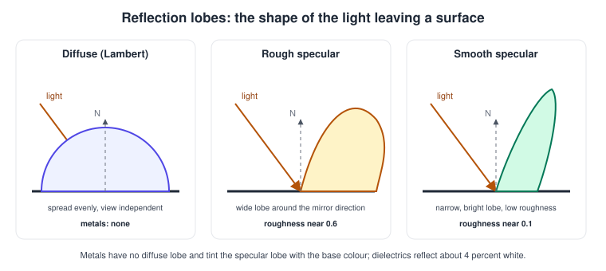
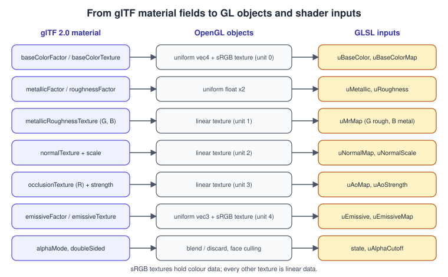
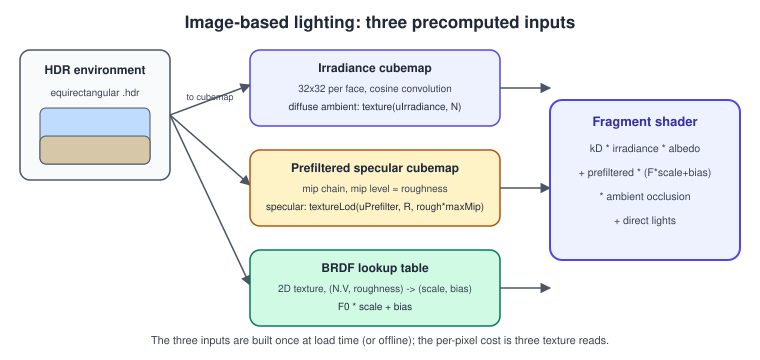

Physically Based Rendering Basics in OpenGL
|
This content was generated with the assistance of AI and should be verified against the official documentation before being relied on in production. |
Physically based rendering (PBR) describes a surface with a few measurable parameters instead of the ad hoc numbers of the Blinn-Phong model, and computes the light leaving it with a reflectance function that does not create energy. The result is a material that looks plausible under any light, which is why PBR is the shading model of glTF 2.0 and of every current game engine. In OpenGL there is nothing special to enable: PBR is a way of writing the fragment shader and of preparing textures. This page gives the model, a complete shader, the extra textures of image-based lighting, and the table that maps a glTF material onto OpenGL objects, using the Bookshelf as the example.
The facts were checked in November 2026. The versions documented are OpenGL 4.6 with GLSL 4.60 and OpenGL ES 3.2 with GLSL ES 3.20;
the shaders below use #version 410 core so they run on macOS as well, and they compile on ES 3.0 and later after the
changes described on the GLSL ES and Portability page. The material
model is the metallic-roughness model defined by the glTF 2.0 specification. The theory is covered in
Lighting and Shading Models; the empirical predecessor is
Lighting with Blinn-Phong, and the normal-map code of
Materials and Normal Mapping is reused unchanged.
The metallic-roughness model
A material has these inputs:
-
Base colour (albedo): the diffuse colour of a non-metal, or the specular tint of a metal. It is stored in sRGB.
-
Metallic: 0 for a dielectric (paper, wood, plastic), 1 for a metal. Real surfaces are almost always close to 0 or 1; intermediate values appear only at the transition between materials in a texture.
-
Roughness: 0 is a mirror, 1 is fully rough. It controls the width of the specular highlight and, with the angle, the amount of light reflected.
-
Optional normal map, ambient occlusion and emissive inputs.
Light striking a surface is split in two. Part of it reflects at the surface (specular reflection). The rest enters the material, scatters and leaves again as diffuse light; a metal absorbs that part, so metals have no diffuse term at all.

The function that says how much light leaves in the direction \( \mathbf{V} \) when it arrives from \( \mathbf{L} \) is the BRDF. The glTF specification defines the specular part with the Cook-Torrance microfacet form:
\[ f_{spec} = \frac\{ D(\mathbf{H}) \, G(\mathbf{N}, \mathbf{V}, \mathbf{L}) \, F(\mathbf{V}, \mathbf{H}) }{ 4 \, ( \mathbf{N}\cdot\mathbf{L} ) \, ( \mathbf{N}\cdot\mathbf{V} ) } \]
with three terms that each have a physical meaning:
-
\( D \), the normal distribution function: how many microfacets point along the half vector. GGX (Trowbridge-Reitz) is the standard, \( D = \alpha^{2} / ( \pi\,( ( \mathbf{N}\cdot\mathbf{H} )^{2} ( \alpha^{2} - 1 ) + 1 )^{2} ) \), with \( \alpha = \mathrm{roughness}^{2} \).
-
\( G \), the geometry (shadowing and masking) term: microfacets hide each other at grazing angles. The Smith form splits it into one factor for the light and one for the view.
-
\( F \), the Fresnel term: the fraction reflected rises towards 1 at grazing angles. The Schlick approximation is \( F = F_0 + ( 1 - F_0 )( 1 - \mathbf{V}\cdot\mathbf{H} )^{5} \).
\( F_0 \) is the reflectance when looking straight at the surface. Dielectrics have about 4 percent (0.04) in a neutral grey, metals use their base colour, so glTF defines \( F_0 \) as the mix of 0.04 and the base colour by the metallic value. The diffuse part is the Lambert term \( \mathrm{baseColour} / \pi \), scaled by \( 1 - F \) and \( 1 - \mathrm{metallic} \), so the energy that was reflected is not counted twice.
A complete shader
The shader below implements the model for point lights in world space, with the three terms spelled out. It consumes the
same VS_OUT block as the normal-mapping page, so its vertex shader can be reused.
#version 410 core
in VS_OUT {
vec3 worldPos;
vec2 uv;
mat3 tbn;
} fs;
uniform sampler2D uBaseColorMap; // sRGB
uniform sampler2D uMetalRoughMap; // linear: G = roughness, B = metallic (glTF layout)
uniform sampler2D uNormalMap; // linear
uniform sampler2D uOcclusionMap; // linear: R = occlusion
uniform sampler2D uEmissiveMap; // sRGB
uniform vec4 uBaseColorFactor;
uniform float uMetallicFactor;
uniform float uRoughnessFactor;
uniform float uNormalScale;
uniform float uOcclusionStrength;
uniform vec3 uEmissiveFactor;
uniform vec3 uViewPos;
uniform vec3 uLightPos[4];
uniform vec3 uLightRadiance[4]; // linear colour times intensity, includes the light's units
uniform int uLightCount;
uniform vec3 uAmbient; // constant fallback when no environment map is bound
out vec4 FragColor;
const float PI = 3.14159265359;
float distributionGGX(float NoH, float alpha)
{
float a2 = alpha * alpha;
float d = NoH * NoH * (a2 - 1.0) + 1.0;
return a2 / (PI * d * d);
}
// Height-correlated Smith visibility V = G / (4 NoL NoV), as in the glTF specification.
float visibilitySmithGGX(float NoL, float NoV, float alpha)
{
float a2 = alpha * alpha;
float gv = NoL * sqrt(NoV * NoV * (1.0 - a2) + a2);
float gl = NoV * sqrt(NoL * NoL * (1.0 - a2) + a2);
return 0.5 / max(gv + gl, 1e-5);
}
vec3 fresnelSchlick(float VoH, vec3 f0)
{
return f0 + (1.0 - f0) * pow(1.0 - VoH, 5.0);
}
void main()
{
vec4 baseSample = texture(uBaseColorMap, fs.uv) * uBaseColorFactor;
vec3 baseColor = baseSample.rgb;
vec2 mr = texture(uMetalRoughMap, fs.uv).gb;
float roughness = clamp(mr.x * uRoughnessFactor, 0.045, 1.0); // avoid a zero-width highlight
float metallic = clamp(mr.y * uMetallicFactor, 0.0, 1.0);
vec3 tn = texture(uNormalMap, fs.uv).xyz * 2.0 - 1.0;
tn.xy *= uNormalScale;
vec3 N = normalize(fs.tbn * normalize(tn));
vec3 V = normalize(uViewPos - fs.worldPos);
float NoV = max(dot(N, V), 1e-4);
float alpha = roughness * roughness;
vec3 f0 = mix(vec3(0.04), baseColor, metallic);
vec3 diffuseColor = baseColor * (1.0 - metallic);
vec3 Lo = vec3(0.0);
for (int i = 0; i < uLightCount; ++i) {
vec3 toLight = uLightPos[i] - fs.worldPos;
float dist2 = max(dot(toLight, toLight), 1e-4);
vec3 L = toLight * inversesqrt(dist2);
vec3 H = normalize(L + V);
float NoL = max(dot(N, L), 0.0);
float NoH = max(dot(N, H), 0.0);
float VoH = max(dot(V, H), 0.0);
vec3 F = fresnelSchlick(VoH, f0);
float D = distributionGGX(NoH, alpha);
float Vis = visibilitySmithGGX(NoL, NoV, alpha);
vec3 specular = F * D * Vis;
vec3 diffuse = (vec3(1.0) - F) * diffuseColor / PI;
vec3 radiance = uLightRadiance[i] / dist2; // inverse-square falloff
Lo += (diffuse + specular) * radiance * NoL;
}
float ao = 1.0 + uOcclusionStrength * (texture(uOcclusionMap, fs.uv).r - 1.0);
vec3 ambient = uAmbient * diffuseColor * ao;
vec3 emissive = texture(uEmissiveMap, fs.uv).rgb * uEmissiveFactor;
FragColor = vec4(Lo + ambient + emissive, baseSample.a); // linear HDR, tone map afterwards
}Several details differ from Blinn-Phong code and are easy to get wrong. The light intensity is physical: a lamp may be several times brighter than 1.0, so the output is linear HDR and needs a tone-mapping step before display. The roughness is clamped to a small positive value because a roughness of exactly 0 gives a delta-function highlight. The \( 1/\pi \) of the diffuse term and the \( 4\,NoL\,NoV \) denominator (folded into the visibility term here) keep the sum energy conserving. The sRGB output conversion and tone mapping are covered in Colour Spaces, HDR and Tone Mapping and in Antialiasing and HDR; a simple version is the Reinhard operator written in the example below.
// Final lines of main(), replacing the FragColor assignment above.
vec3 hdr = Lo + ambient + emissive;
vec3 mapped = hdr / (hdr + vec3(1.0)); // Reinhard, simple but adequate for a first image
FragColor = vec4(mapped, baseSample.a); // GL_FRAMEBUFFER_SRGB encodes the resultFrom glTF to OpenGL: mapping a material
The glTF 2.0 material has one block, pbrMetallicRoughness, plus a few optional inputs. Each one becomes a uniform or a
texture in the shader above.

Two conventions matter. First, the metallic-roughness texture stores roughness in the green channel and metallic in the blue channel (the red channel may hold ambient occlusion when the maps are packed into one texture); the final value is the texel multiplied by the factor. Second, colour textures (base colour and emissive) are sRGB and every other texture is linear, so upload them with different internal formats.
The bookshelf.glb file of the Bookshelf set (bookshelf.glb) uses exactly this layout: a Wood
material for the shelf, and Cover, Spine and Pages materials for the books. The asset-loading page explains how to read it
with cgltf; the fragment below shows only how a loaded material becomes the uniforms and textures above.
#define CGLTF_IMPLEMENTATION
#include <cgltf.h>
#include <glad/gl.h>
struct PbrMaterial {
float baseColorFactor[4] = {1, 1, 1, 1};
float metallicFactor = 1.0f;
float roughnessFactor = 1.0f;
float emissiveFactor[3] = {0, 0, 0};
float normalScale = 1.0f;
bool alphaBlend = false;
bool alphaMask = false;
float alphaCutoff = 0.5f;
bool doubleSided = false;
GLuint baseColorMap = 0, metalRoughMap = 0, normalMap = 0, occlusionMap = 0, emissiveMap = 0;
};
// Reads the scalar parameters of one cgltf material. Textures are created separately from the images.
PbrMaterial readMaterial(const cgltf_material& m)
{
PbrMaterial out;
if (m.has_pbr_metallic_roughness) {
const cgltf_pbr_metallic_roughness& p = m.pbr_metallic_roughness;
for (int i = 0; i < 4; ++i) out.baseColorFactor[i] = p.base_color_factor[i];
out.metallicFactor = p.metallic_factor;
out.roughnessFactor = p.roughness_factor;
}
for (int i = 0; i < 3; ++i) out.emissiveFactor[i] = m.emissive_factor[i];
out.normalScale = m.normal_texture.scale;
out.alphaBlend = m.alpha_mode == cgltf_alpha_mode_blend;
out.alphaMask = m.alpha_mode == cgltf_alpha_mode_mask;
out.alphaCutoff = m.alpha_cutoff;
out.doubleSided = m.double_sided;
return out;
}
void setCullState(const PbrMaterial& m)
{
if (m.doubleSided) glDisable(GL_CULL_FACE); else glEnable(GL_CULL_FACE);
}Other material features are optional glTF extensions that map onto extra terms in the shader: KHR_materials_emissive_strength
(emissive values above 1), KHR_materials_ior, KHR_materials_specular, KHR_materials_clearcoat, KHR_materials_sheen,
KHR_materials_transmission and KHR_materials_volume. Implement the core model first and the extensions one at a time as
the content needs them. Lights in glTF come from KHR_lights_punctual, which defines intensity in candela for point and spot
lights and lux for directional lights; convert to the radiance your shader expects with a single exposure constant.
Image-based lighting
Point lights alone give a dark, flat result, because most of the light in a real scene comes from the whole environment. Image-based lighting (IBL) uses a panoramic HDR image of the surroundings as a light source. Integrating the environment over the hemisphere at every pixel is far too expensive, so the integral is split in two and precomputed:
-
the diffuse integral depends only on the normal: convolve the environment with a cosine lobe once, into a small irradiance cubemap (32 by 32 texels per face is enough, since it is so smooth);
-
the specular integral depends on the reflection direction and on the roughness: filter the environment for increasing roughness into the mip levels of a prefiltered cubemap, and store the Fresnel-dependent part of the BRDF in a small 2D BRDF lookup texture indexed by \( N\cdot V \) and roughness (the split-sum approximation).

At run time the ambient term becomes three texture reads:
uniform samplerCube uIrradianceMap;
uniform samplerCube uPrefilterMap;
uniform sampler2D uBrdfLut;
uniform float uMaxPrefilterLod; // number of mip levels of the prefiltered map minus one
uniform float uEnvIntensity;
vec3 imageBasedLighting(vec3 N, vec3 V, vec3 f0, vec3 diffuseColor, float roughness, float ao)
{
float NoV = max(dot(N, V), 1e-4);
vec3 R = reflect(-V, N);
vec3 F = f0 + (max(vec3(1.0 - roughness), f0) - f0) * pow(1.0 - NoV, 5.0);
vec3 irradiance = texture(uIrradianceMap, N).rgb;
vec3 diffuse = (vec3(1.0) - F) * irradiance * diffuseColor;
vec3 prefiltered = textureLod(uPrefilterMap, R, roughness * uMaxPrefilterLod).rgb;
vec2 brdf = texture(uBrdfLut, vec2(NoV, roughness)).rg;
vec3 specular = prefiltered * (f0 * brdf.x + brdf.y);
return (diffuse + specular) * ao * uEnvIntensity;
}Source: OpenGL 4 reference: textureLod and reflect.
The cubemaps are filtered into with glFramebufferTexture2D onto each face (see
Framebuffers and Render to Texture) or with a compute
shader (see Compute Shaders). The irradiance convolution is a short fragment
shader run once per cube face:
#version 410 core
// Rendered six times, once per cube face, with vLocalPos = the direction through each texel.
in vec3 vLocalPos;
uniform samplerCube uEnvironment; // HDR cubemap, GL_RGB16F
out vec4 FragColor;
const float PI = 3.14159265359;
void main()
{
vec3 N = normalize(vLocalPos);
vec3 up = abs(N.y) < 0.999 ? vec3(0, 1, 0) : vec3(1, 0, 0);
vec3 right = normalize(cross(up, N));
up = cross(N, right);
vec3 sum = vec3(0.0);
float count = 0.0;
const float delta = 0.05;
for (float phi = 0.0; phi < 2.0 * PI; phi += delta) {
for (float theta = 0.0; theta < 0.5 * PI; theta += delta) {
vec3 t = vec3(sin(theta) * cos(phi), sin(theta) * sin(phi), cos(theta));
vec3 dir = t.x * right + t.y * up + t.z * N;
sum += texture(uEnvironment, dir).rgb * cos(theta) * sin(theta);
count += 1.0;
}
}
FragColor = vec4(PI * sum / count, 1.0);
}Enable GL_TEXTURE_CUBE_MAP_SEAMLESS (core since OpenGL 3.2) so filtering across face edges does not show seams; ES 3.0 and
later filter cube faces seamlessly by default. The brute-force loop above is slow, but it runs once at load, and the specular
prefilter and the lookup table use importance sampling in the same manner; production pipelines usually bake all three
offline with a tool and ship them as KTX2 files.
Common mistakes
-
Colour textures as linear, data textures as sRGB. Base colour and emissive must be sRGB; metallic-roughness, normal and occlusion must be linear.
-
Swapped channels. Roughness is green and metallic is blue in the glTF packed texture; reading red gives plausible but wrong results.
-
Light units. A physically sized light and an LDR framebuffer clip to white. Use a floating-point render target and tone mapping, or an exposure value.
-
Double-counted energy. Adding a full diffuse term to a metal, or a full specular term to the diffuse without the \( 1 - F \) factor, makes surfaces brighter than the light that arrives.
-
Roughness 0. A mirror produces a zero-size highlight and divisions by zero; clamp.
-
Ignoring alpha mode. glTF has opaque, mask and blend modes; blend needs the sorting rules of Blending, Depth and Stencil.
-
Prefiltered cubemap without mipmaps. The mip chain is the roughness axis; generating mips by plain box filtering instead of GGX filtering gives the wrong highlight shape.
-
Seams at cube face edges. Enable seamless cubemap filtering.
Performance notes
-
The shader is arithmetic heavy compared with Blinn-Phong: a pow, a few square roots and a loop. On desktop GPUs this is rarely the bottleneck; on mobile, restrict the number of lights and consider
mediumpfor the lighting math withhighppositions. -
IBL costs three texture reads regardless of the scene, a good trade against many lights.
-
Pack occlusion, roughness and metallic into one texture, as glTF suggests, to save a read and a binding. Share textures between materials by using texture atlases or arrays.
-
Replace
pow(1.0 - VoH, 5.0)with multiplications if profiling shows it matters. -
Precompute the BRDF lookup texture once; it is independent of the scene.
-
Deferred shading stores base colour, normal, metallic and roughness in a G-buffer and shades once per pixel, which is the usual answer to many lights; see Performance and Profiling.
What the books cover and where they are outdated
None of the classic OpenGL books covers physically based shading: it did not exist as a mainstream technique when they were written,
and they teach the empirical Phong family, fixed-function material state (glMaterialfv) and cube-map reflections at best.
Everything on this page is therefore current practice that the books lack. When combining their material with this page, replace
the shininess exponent with roughness, the specular colour with the metallic-roughness inputs, glMaterialfv with uniforms and
the fixed-function environment mapping (GL_REFLECTION_MAP, texgen) with a shader that samples a samplerCube.
| Older material | What it says | What is current |
|---|---|---|
OpenGL SuperBible, 4th edition (2007) |
Per-vertex and per-pixel lighting with a shininess exponent, cube-map reflections via texgen |
PBR with metallic and roughness; reflections from prefiltered environment maps |
OpenGL ES 2.0 and 3.0 Programming Guides |
Phong lighting in GLSL ES, environment mapping with |
The same samplers; compact PBR variants run on ES 3.0 and later with |
Recent changes
-
glTF 2.0 (2017) made metallic-roughness the standard exchange material; the Khronos material extensions (
KHR_materials_*) have added clearcoat, sheen, transmission and more since then. -
OpenGL 4.6 and ES 3.2 added nothing for PBR; it is a shader technique. The compute-shader and 16-bit float render-target features that IBL baking uses have been in core since OpenGL 4.3 and ES 3.1.
-
The Khronos glTF project maintains a sample renderer, and the glTF specification includes the reference GLSL for the BRDF used above, which is the best source to check a shader against.
References
-
glTF 2.0 specification (materials, Appendix B BRDF implementation)
-
OpenGL 4 reference pages (mix, reflect, textureLod, glEnable, glFramebufferTexture)